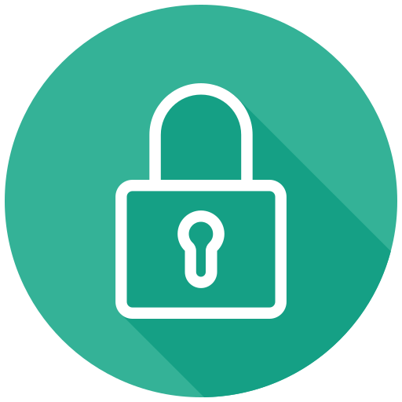

2차 비밀번호 설정
이중 비밀번호 보안으로 더욱 안전하게 게임 정보를 보호합니다.
내 게임 정보 및 자산 보호를 위해 2차 비밀번호 설정을 권장해 드립니다.
| 이용절차 | 2차 비밀번호 설정 "> 게임 실행 "> 2차 비밀번호 입력 "> 게임 접속 |
|---|
잠깐! 2차 비밀번호 설정 전에 확인해 주세요.
- 본인인증을 통해 무료로 2차 비밀번호 서비스 설정, 해지 하실 수 있습니다.
- 비밀번호를 잊어버리셨을 때에는 본인인증을 거쳐 비밀번호를 다시 설정해야 합니다.
- 비밀번호를 5회 이상 잘못입력하셨거나 잊어버리셨을 경우, 본인인증을 거쳐 비밀번호 재설정이 가능합니다.
- 인증수단이 없는 경우 고객센터로 문의해 주세요.